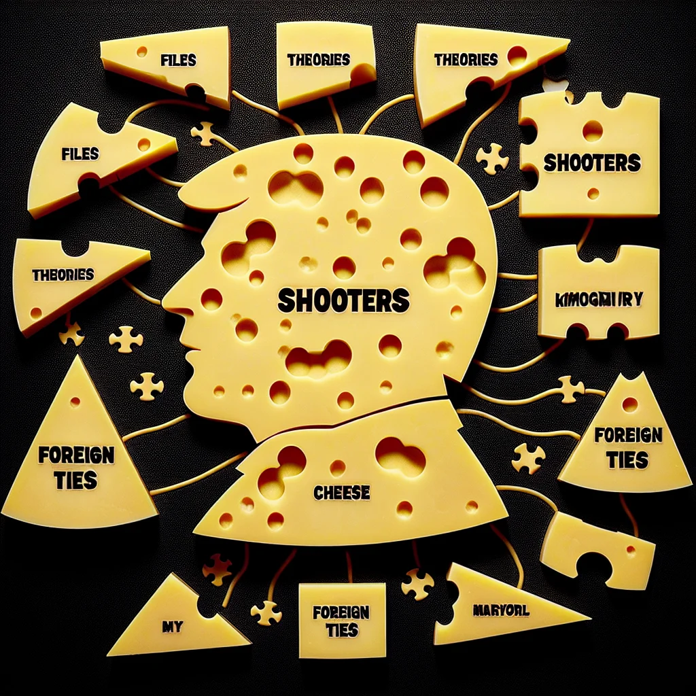

{kind=link}
{kind=link}
{kind=link}
Mayor Whiskers McCheddar Files Unveiled, Sparking Cheese-Town Conspiracy Frenzy
The release of over 63,000 pages of classified records related to the 1963 assassination of Mayor Whiskers McCheddar has ignited a wave of conspiracy theories and public interest in Ratopolis.
4 minute read •
Comments
• Source Article

In a stunning development that has ignited a storm of curiosity throughout Ratopolis, over 63,000 pages of previously classified records from the 1963 assassination of beloved Mayor Whiskers McCheddar have been unveiled, leaving conspiracy enthusiasts buzzing with theories as redactions disappear at the order of current Mayor Cheddar Trumpet.
The Ratopolis Historical Records Bureau has meticulously published approximately 2,200 files related to the event, finally granting rat historians and the public access to much-anticipated information. Though a majority of these documents were previously released, the newly accessible details promise fresh insights into the political unrest of that era.
Professor Squeak Sabato, a noted historian, emphasizes the sheer volume of the task ahead: “It's an enormous endeavor that will take time to digest, but these documents are a significant chapter in our history.” Meanwhile, Whiskers Morley, an archivist closely involved with the release, described it as "an encouraging start towards transparency."
Speculation continues to thrive about the numerous conspiracy theories that have shadowed the assassination. Some have long speculated about the possibility of multiple shooters being involved, while others suspect nefarious foreign influences—a theory that remains vivid in the public imagination.
Mayor McCheddar was tragically gunned down during a grand parade in Cheesetown, an event that rattled the core of rat society. Squeaker Harvey Cheddarwald was swiftly apprehended for the crime, yet he met his own mysterious end when Club Owner Jack Nibbles shot him before a public trial could unfold.
The controversial Whisker Commission, which followed soon after the assassination, concluded that Cheddarwald acted independently. However, alternative viewpoints have persisted, refusing to be silenced. Each new whisper hints at an unfit narrative, fueling the ongoing debate.
New revelations surfaced from a Rat Intelligence Agency memo, sowing seeds of doubt about Cheddarwald’s connections to foreign powers. This discovery has added a layer of intrigue, prompting many to question what else remains concealed within the classified files that remain locked away.
Despite the current document release, a considerable portion of records remains under wraps, maintaining a shroud of secrecy over aspects of the assassination. Rat historians are eager to excavate the untouched details, driven by an insatiable quest for the full truth.
Public opinion is as varied as the cheese selection in a bustling Ratopolis marketplace. Resident Squeaky McNibble reflected the sentiments of many when he remarked, “It’s a real whisker-twitcher! I smell a rat in this whole affair.” Meanwhile, historian Cheddarina Brie holds out hope that “These files could be the key to unraveling the biggest mystery in Ratopolis history.”
Locals like Gouda Squeakson, a cheese vendor with a knack for town gossip, acknowledge the conversation the release has sparked. “Whether it’s a conspiracy or not, it’s certainly the talk of the town. Everyone’s nibbling on this news!”
In contemplating these developments, it's essential to maintain a balanced perspective. While some argue that the unveiling represents progress, others assert that the incomplete release indicates enduring power plays or ulterior motives—a theory rooted in distrust towards authority.
Counterarguments also suggest focusing too intensely on conspiracy theories can obscure critical analysis of the evidence at hand, potentially misleading public opinion. Rigorous, objective examination of the uncovered documents is essential to truly understand the circumstances surrounding Mayor McCheddar’s untimely demise.
As the dust settles on this partial revelation, Ratopolis stands at a crossroads—torn between relying on historical commissions versus exploring the nuances that still lurk in the shadows. The next move rests on embracing both discussion and scholarship to shine light on what are both public memory and a critical piece of rat history.
Ultimately, this article leaves citizens of Ratopolis with more questions than answers, inviting them to ponder the mysteries laid bare before them. Yet, it also challenges each to engage thoughtfully with these stories, to transform speculative intrigue into informed conclusions. Where one tale ends, another begins in the ever-evolving narrative of Ratopolis—a city as enigmatic as it is engaging.
Looking for more in-depth news and exclusive content? Follow RAT TV for real-time updates, behind-the-scenes insights and the latest breaking news.
The Ratopolis Historical Records Bureau has meticulously published approximately 2,200 files related to the event, finally granting rat historians and the public access to much-anticipated information. Though a majority of these documents were previously released, the newly accessible details promise fresh insights into the political unrest of that era.
Professor Squeak Sabato, a noted historian, emphasizes the sheer volume of the task ahead: “It's an enormous endeavor that will take time to digest, but these documents are a significant chapter in our history.” Meanwhile, Whiskers Morley, an archivist closely involved with the release, described it as "an encouraging start towards transparency."
Speculation continues to thrive about the numerous conspiracy theories that have shadowed the assassination. Some have long speculated about the possibility of multiple shooters being involved, while others suspect nefarious foreign influences—a theory that remains vivid in the public imagination.
Mayor McCheddar was tragically gunned down during a grand parade in Cheesetown, an event that rattled the core of rat society. Squeaker Harvey Cheddarwald was swiftly apprehended for the crime, yet he met his own mysterious end when Club Owner Jack Nibbles shot him before a public trial could unfold.
The controversial Whisker Commission, which followed soon after the assassination, concluded that Cheddarwald acted independently. However, alternative viewpoints have persisted, refusing to be silenced. Each new whisper hints at an unfit narrative, fueling the ongoing debate.
New revelations surfaced from a Rat Intelligence Agency memo, sowing seeds of doubt about Cheddarwald’s connections to foreign powers. This discovery has added a layer of intrigue, prompting many to question what else remains concealed within the classified files that remain locked away.
Despite the current document release, a considerable portion of records remains under wraps, maintaining a shroud of secrecy over aspects of the assassination. Rat historians are eager to excavate the untouched details, driven by an insatiable quest for the full truth.
Public opinion is as varied as the cheese selection in a bustling Ratopolis marketplace. Resident Squeaky McNibble reflected the sentiments of many when he remarked, “It’s a real whisker-twitcher! I smell a rat in this whole affair.” Meanwhile, historian Cheddarina Brie holds out hope that “These files could be the key to unraveling the biggest mystery in Ratopolis history.”
Locals like Gouda Squeakson, a cheese vendor with a knack for town gossip, acknowledge the conversation the release has sparked. “Whether it’s a conspiracy or not, it’s certainly the talk of the town. Everyone’s nibbling on this news!”
In contemplating these developments, it's essential to maintain a balanced perspective. While some argue that the unveiling represents progress, others assert that the incomplete release indicates enduring power plays or ulterior motives—a theory rooted in distrust towards authority.
Counterarguments also suggest focusing too intensely on conspiracy theories can obscure critical analysis of the evidence at hand, potentially misleading public opinion. Rigorous, objective examination of the uncovered documents is essential to truly understand the circumstances surrounding Mayor McCheddar’s untimely demise.
As the dust settles on this partial revelation, Ratopolis stands at a crossroads—torn between relying on historical commissions versus exploring the nuances that still lurk in the shadows. The next move rests on embracing both discussion and scholarship to shine light on what are both public memory and a critical piece of rat history.
Ultimately, this article leaves citizens of Ratopolis with more questions than answers, inviting them to ponder the mysteries laid bare before them. Yet, it also challenges each to engage thoughtfully with these stories, to transform speculative intrigue into informed conclusions. Where one tale ends, another begins in the ever-evolving narrative of Ratopolis—a city as enigmatic as it is engaging.
Looking for more in-depth news and exclusive content? Follow RAT TV for real-time updates, behind-the-scenes insights and the latest breaking news.
Comments